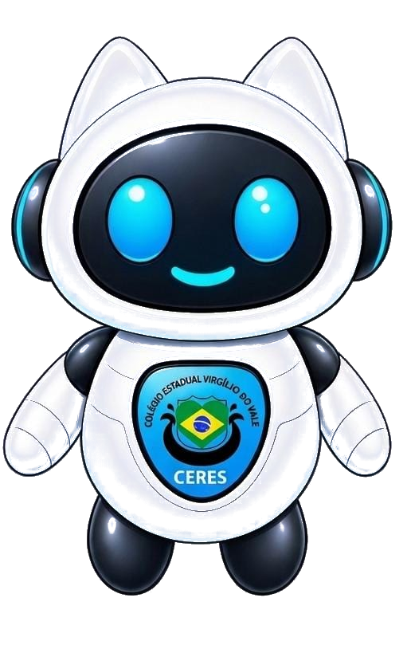

Ensino Médio
Formação geral integrada à preparação para a continuidade dos estudos e para o mundo do trabalho.
Informações institucionais, atividades e projetos da comunidade escolar.
Conheça a escola ↗Localizado em Ceres–GO, o Colégio Estadual Coronel Virgílio do Vale atende estudantes do Ensino Médio e oferece formação técnica integrada nas áreas de Informática e Administração.
Formação geral integrada à preparação para a continuidade dos estudos e para o mundo do trabalho.
Formação técnica integrada ao Ensino Médio nas áreas de Informática e Administração.
Iniciativas, trabalhos e experiências desenvolvidos pelos estudantes durante o ano letivo.
A feira reúne trabalhos e projetos desenvolvidos pelos estudantes ao longo do ano.

Canais de contato da escola.